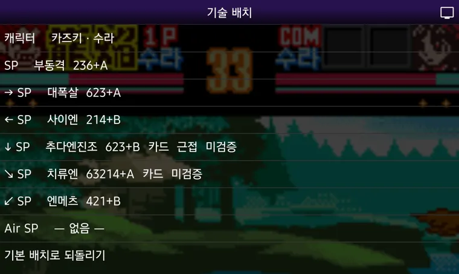

『사무라이 스피리츠! 2』(네오지오 포켓 컬러)의 필살기를 버튼 하나로.
NGP.emu(오픈소스 에뮬레이터)를 개조한 독립 앱입니다. 설치하면 끝, 설정할 것이 거의 없습니다.
커맨드를 넣는 대신 SP 버튼 하나를 누릅니다. 엔진이 게임 메모리에서 캐릭터가 바라보는 방향을 읽어, 그 기술의 커맨드를 좌우 맞춰 프레임 단위로 대신 넣습니다. 없는 기술을 만들지 않습니다 — 사람이 손으로 넣을 수 있는 입력을 대신 넣을 뿐입니다. 15캐릭터 · 30유파 · 171기술 전부 지원.

↑ [기술 배치] 화면 — 방향별 기술과 커맨드·속성이 그대로 보입니다.
패키지 ID가 달라서 스토어판 NGP.emu와 나란히 설치됩니다. 기존 앱을 지울 필요 없습니다.
| 판 | 어디서 |
|---|---|
| 브라우저판 — 설치 없이 바로 | rmdkdkr-png.github.io/ss2-sp-runner |
| 안드로이드 앱판 (이 페이지) | Releases에서 APK |
| 레트로아크 코어판 — PC·휴대기기 | github.com/rmdkdkr-png/ss2-sp-core |
원본: Rakashazi/emu-ex-plus-alpha (GPL-3.0) 의 포크이며 소스는 여기 전부 공개돼 있습니다. 게임 롬은 포함하지 않습니다. SAMURAI SPIRITS™/SAMURAI SHODOWN™ 저작권은 SNK CORPORATION에 있으며 이 프로젝트는 SNK와 무관한 비공식 팬 제작물입니다.